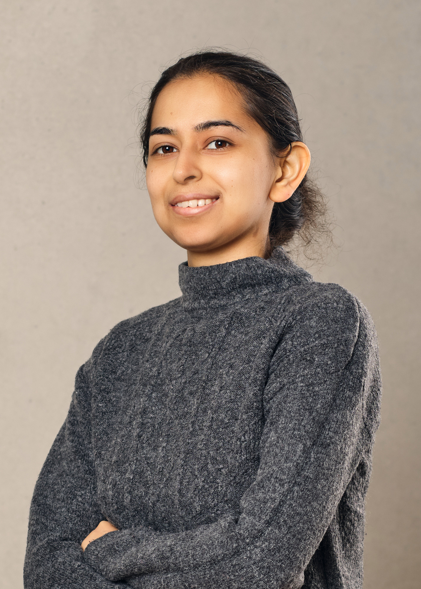

Shweta MahajanI am a Machine Learning Researcher at Qualcomm AI Research. I was a postdoctoral researcher and a Vector Postdoctoral Affiliate in the Vision Group at University of British Columbia advised by Prof. Leonid Sigal and Prof. Kwang Moo Yi. My research at UBC is focussed on diffusion models for high-level as well as low-level computer vision. I obtained my Ph.D. under the supervision of Prof. Stefan Roth, Ph.D. in the Visual Inference Group, Technische Universität Darmstadt. During my Ph.D., I researched deep generative algorithms for multimodal representation learning and the efficiency of exact inference deep generative models. I received my M.Sc. from the Saarland University where I was a part of the Machine Learning Group and the Max Planck Institute of Informatics. Email / CV / Google Scholar / LinkedIn |
 |
News
|
ResearchI am interested in computer vision and machine learning, specifically in deep generative models (diffusion models, normalizing flows, variational methods, GANs) for multimodal representation learning. |

|
Prompting Hard or Hardly Prompting: Prompt Inversion for Text-to-Image Diffusion ModelsShweta Mahajan, Tanzila Rahman, Kwang Moo Yi, Leonid Sigal CVPR, 2024 paper / arxiv Inverting the diffusion model to obtain interpretable language prompts directly based on the findings that different timesteps of the diffusion process cater to different levels of detail in an image. |

|
ViVid-1-to-3: Novel View Synthesis with Video Diffusion ModelsJeong-gi Kwak, Erqun Dong, Yuhe Jin, Hanseok Ko, Shweta Mahajan, Kwang Moo Yi CVPR, 2024 paper / arxiv / code / We utilize a pre-trained video diffusion model to solve consistency in zero-shot view synthesis. |

|
Unsupervised Keypoints from Pretrained Diffusion ModelsEric Hedlin, Gopal Sharma, Shweta Mahajan, Xingzhe He, Hossam Isack, Abhishek Kar Helge Rhodin, Andrea Tagliasacchi, Kwang Moo Yi CVPR, 2024 paper / arxiv / code / One can leverage this semantic knowledge within diffusion models to find key points across images of similar kind. |

|
Unsupervised Semantic Correspondence Using Stable DiffusionEric Hedlin, Gopal Sharma, Shweta Mahajan, Hossam Isack, Abhishek Kar, Andrea Tagliasacchi, Kwang Moo Yi NeurIPS, 2023 paper / arxiv / code / One can leverage this semantic knowledge within diffusion models to find semantic correspondences with prompt optimization. |

|
Make-A-Story: Visual Memory Conditioned Consistent Story GenerationTanzila Rahman, Hsin-Ying Lee, Jian Ren, Sergey Tulyakov, Shweta Mahajan and Leonid Sigal CVPR, 2023 paper / arxiv / Sentence-conditioned soft attention over the memories enables effective reference resolution and learns to maintain scene and actor consistency when needed. |

|
Multimodal Representation Learning for Diverse Synthesis with Deep Generative ModelsShweta Mahajan Ph.D. Thesis, 2022 Thesis |

|
Diverse Image Captioning with Grounded StyleFranz Klein, Shweta Mahajan and Stefan Roth GCPR, 2021 paper / arxiv / code A sequential variational framework encoding the style information grounded in images for stylized image captioning. |

|
PixelPyramids: Exact Inference Models from Lossless Image PyramidsShweta Mahajan and Stefan Roth ICCV, 2021 paper / supp / arxiv / video / code A block-autoregressive exact inference model employing a lossless pyramid decomposition with scale-specific representations to encode the joint distribution of image pixels. |

|
Diverse Image Captioning with Context-Object Split Latent SpacesShweta Mahajan and Stefan Roth NeurIPS, 2020 paper / supp / arxiv / video / code We introduce a novel factorization of the latent space to model diversity in contextual descriptions across images and texts within the dataset. |

|
Normalizing Flows with Multi-Scale Autoregressive PriorsShweta Mahajan*, Apratim Bhattacharyya*, Mario Fritz, Bernt Schiele and Stefan Roth CVPR, 2020 paper / supp / arxiv / video / code We improve the representational power of flow-based models by introducing channel-wise dependencies in their latent space through multi-scale autoregressive priors. |

|
Latent Normalizing Flows for Many-to-Many Cross-Domain MappingsShweta Mahajan, Iryna Gurevych and Stefan Roth ICLR, 2020 (Best Paper Award, Fraunhofer IGD) paper / arxiv / video / code Our model integrates normalizing flow-based priors for the domain-specific information, which allows us to learn diverse many-to-many mappings between the image and text domains. |

|
Joint Wasserstein Autoencoders for Aligning Multimodal EmbeddingsShweta Mahajan, Teresa Botschen, Iryna Gurevych and Stefan Roth ICCV Workshops, 2019 (Oral presentation) paper / arxiv We propose joint Gaussian regularization of the latent representations to ensure coherent cross-modal semantics that generalize across datasets. |